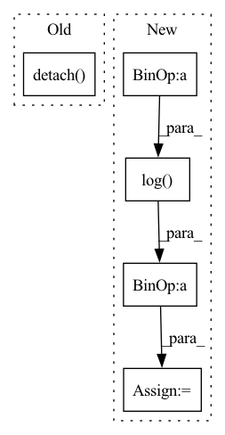

Pattern ID :28509

Before Change
E_log_p_z = torch.sum(-0.5 * (z ** 2), dim = 1)
// Get importance weights
log_weight = (recons_loss + E_log_q_z - E_log_p_z).detach().data
weight = F.softmax(log_weight, dim = 0)
kld_loss = torch.mean(E_log_q_z - E_log_p_z, dim = 0) //torch.mean(-0.5 * torch.sum(1 + log_var - mu ** 2 - log_var.exp(), dim = 1), dim = 0)
After Change
pi = torch.tensor(np.pi, dtype=torch.float)
E_log_q_z = torch.sum(-0.5 * (eps ** 2) - 0.5 * torch.log(2 * pi) - log_var, dim = 1)
E_log_p_z = torch.sum(-0.5 * (z ** 2) - 0.5 * torch.log(2 * pi), dim = 1)
// Get importance weights
log_weight = (recons_loss + E_log_p_z - E_log_q_z).detach().data
weight = F.softmax(log_weight, dim = 0)
kld_loss = torch.mean(E_log_q_z - E_log_p_z, dim = 0) //torch.mean(-0.5 * torch.sum(1 + log_var - mu ** 2 - log_var.exp(), dim = 1), dim = 0)
In pattern: SUPERPATTERN
Frequency: 3
Non-data size: 5
Instances
Fragment ID: 84385316
Project Name: antixk/pytorch-vae
Commit Name: f70272dd480b4984d3f46eeb957ae39de07f950b
Time: 2020-01-20
Author: anandkrish894@gmail.com
File Name: models/iwae.py
M Class Name: IWAE
N Class Name: IWAE
M Method Name: loss_function(1)
N Method Name: loss_function(1)
M Parent Class: BaseVAE
N Parent Class: BaseVAE
M File Name: models/iwae.py
N File Name: models/iwae.py
M Start Line: 130
M End Line: 143
N Start Line: 133
N End Line: 146
'>
Before Change
// Compute policy loss
d_e_clip = torch.clip(d_e, 0.1, 0.9).detach()
d_o_clip = torch.clip(d_o, 0.1, 0.9).detach()
bc_loss = -log_pi_e.sum(1)
corr_loss_e = -log_pi_e.sum(1) * (self.eta / d_e_clip + self.eta / (1 - d_e_clip))
corr_loss_o = -log_pi_o.sum(1) * (1 / (1 - d_o_clip))
p_loss = self.alpha * bc_loss.mean() - corr_loss_e.mean() + corr_loss_o.mean()
After Change
d_loss = self.eta * torch.mean(d_loss_e) + torch.mean(d_loss_o)
else:
d_loss_e = -torch.log(d_e)
d_loss_o = -torch.log(1 - d_o)
d_loss = torch.mean(d_loss_e) + torch.mean(d_loss_o)
// Optimize the discriminator
self.discriminator_optimizer.zero_grad()
'>
Fragment ID: 84385346
Project Name: ryanxhr/dwbc
Commit Name: b3791e408af7125fde12cda1cdeaefbaa400aacc
Time: 2022-06-30
Author: xuhaoran8@jd.com
File Name: algos/DWBC.py
M Class Name: DWBC
N Class Name: DWBC
M Method Name: train(4)
N Method Name: train(4)
M Parent Class: object
N Parent Class: object
M File Name: algos/DWBC.py
N File Name: algos/DWBC.py
M Start Line: 132
M End Line: 154
N Start Line: 121
N End Line: 150
'>
Before Change
t_discrim_real_loss = torch.log(tdiscrim_real_output + FLAGS.EPS)
t_discrim_loss = torch.mean(-(t_discrim_fake_loss + t_discrim_real_loss))
t_balance = torch.mean(t_discrim_real_loss) + t_adversarial_loss.detach()
update_list += [t_discrim_loss]
update_list_name += ["t_discrim_loss"]
After Change
if (GAN_FLAG):
t_adversarial_loss = torch.mean(-torch.log(tdiscrim_fake_output.detach() + FLAGS.EPS))
d_adversarial_loss = torch.mean(-torch.log(tdiscrim_fake_output + FLAGS.EPS))
dt_ratio = torch.min(torch.tensor(FLAGS.Dt_ratio_max),
FLAGS.Dt_ratio_0 + FLAGS.Dt_ratio_add * torch.tensor(Global_step, dtype=torch.float32))
'>
Fragment ID: 84385328
Project Name: dwightfoster/pytorch-tecogan
Commit Name: 8a295f4b0f94098dae910fe27ccceade320e2597
Time: 2021-02-03
Author: dwightfoster03@gmail.com
File Name: code/train.py
M Class Name: AnonimousClass
N Class Name: AnonimousClass
M Method Name: TecoGAN(13)
N Method Name: TecoGAN(13)
M Parent Class:
N Parent Class:
M File Name: code/train.py
N File Name: code/train.py
M Start Line: 287
M End Line: 325
N Start Line: 232
N End Line: 330